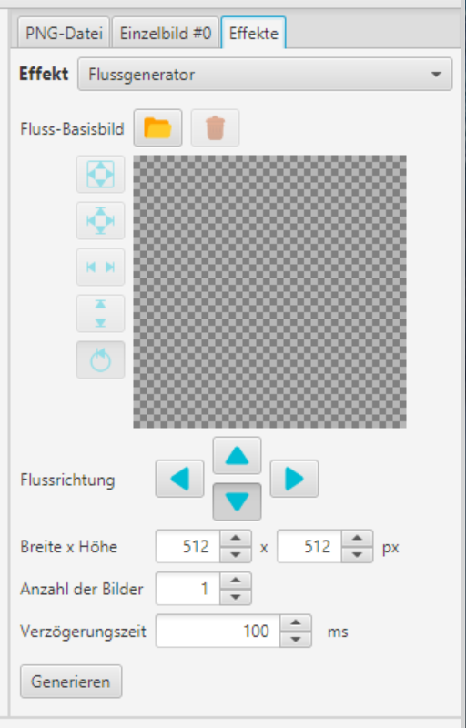
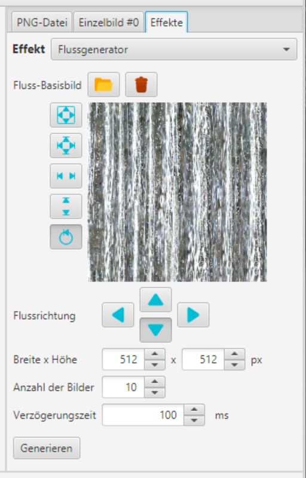
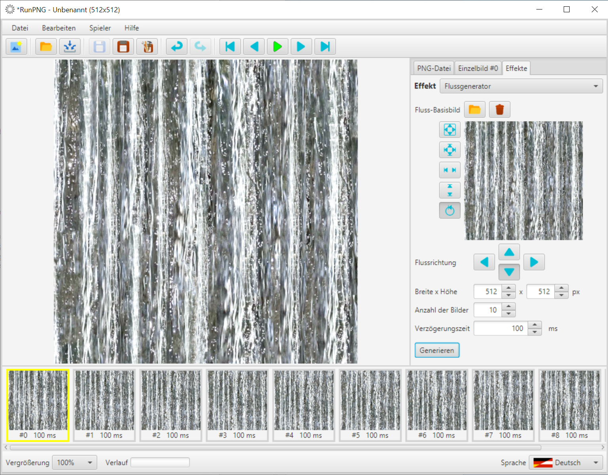

Flussgenerator
Der Flussgenerator wird nicht auf eine bestehende Bildsequenz angewandt, sondern erzeugt selbst eine neue. Eine bereits vorhandene Bildsequenz würde davon ohne Warnung überschrieben. Doch keine Sorge; mit der Rückgängig-Funktion bekäme man die alte Sequenz wieder zurück. Es wäre dennoch nicht falsch, seine Arbeit vorher zu speichern und den Speicher mit Datei => Neu zu leeren.
Das ist der Dialog für den Flussgenerator. Oben der schon bekannte Bildkasten. Darunter Schaltflächen für die Flussrichtung, von denen sich sinnvollerweise nur jeweils eine auswählen lässt. Dann folgt die Dimensionierung (Breite x Höhe). Die Anzahl der Bilder bestimmt die Schrittweite der Einzelbilder in Pixel (Höhe oder Breite geteilt durch die Anzahl der Bilder). Die Verzögerungszeit in Millisekunden gilt je Einzelbild. Zum Schluss noch die Generieren-Schaltfläche.
Zunächst laden wir mit der Schaltfläche  ein Bild, das wir "fließen" lassen
möchten. Recht gut eignen sich dafür so genannte nahtlose Texturen. Hier verwenden wir passend zum Thema ein Bild von strömendem Wasser, das
für "Nahtlos" präpariert wurde. Es findet sich unter RunPNG/doc/samples/various/water 1.png. Breite und Höhe werden im Rahmen der Minimal-
und Maximalwerte vom Bild übernommen. In diesem Fall hat das Bild zufälligerweise die Standardmaße der Applikation. Was aber nicht unbedingt so
sein muss.
ein Bild, das wir "fließen" lassen
möchten. Recht gut eignen sich dafür so genannte nahtlose Texturen. Hier verwenden wir passend zum Thema ein Bild von strömendem Wasser, das
für "Nahtlos" präpariert wurde. Es findet sich unter RunPNG/doc/samples/various/water 1.png. Breite und Höhe werden im Rahmen der Minimal-
und Maximalwerte vom Bild übernommen. In diesem Fall hat das Bild zufälligerweise die Standardmaße der Applikation. Was aber nicht unbedingt so
sein muss.
Als Anzahl der Bilder geben wir 10 ein. Das entspicht einer Schrittweite von 51,2 Pixel. 0,2 Pixel gibt es jedoch nicht, weil die Bildpuffer nach wie vor mit ganzzahligen Indizes arbeiten. Damit hier bei einer höheren Zahl von Schritten kein sichtbarer Schlupf entsteht, arbeitet die Schleife mit Fließkomma und rundet die Anzahl der der zu verschiebenden Pixel auf oder ab. Wobei das erste Bild nicht verschoben wird und die nachfolgenden Bilder um die jeweilige Schrittweite in der gewünschten Richtung. Was bei der Verschiebung des Bildes an einem Ende rausfällt wird am entgegengesetzten Ende wieder eingefügt.
Nach einem Klick auf die Schaltfläche Generieren sieht das dann so aus. Es wurden 10 Bilder erzeugt. Aufeinander folgend jeweils um 51 bzw. 52 Pixel nach unten verschoben. Die Bildfolge kann man sich mit dem Spieler ansehen und natürlich auch für die weitere Verwendung abspeichern.